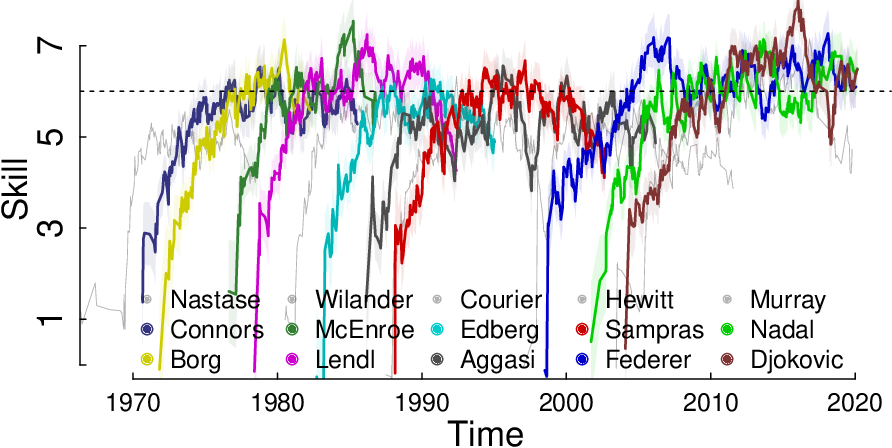

TrueSkillThroughTime.py¶
The state-of-the-art skill model: Individual learning curves with reliable initial estimates and guaranteed comparability between distant estimates.
Install¶
python3 -m pip install trueskillthroughtime
The we can use it.
import trueskillthroughtime as ttt
To appreciate the advantages of TrueSkill Through Time, scroll down to subsection Ilustration
To quickly see how to use the package, scroll down to subsection First examples.
Index¶
Causal model¶
Knowing how individual skills change over time is essential in many areas. Since skills are hidden variables, the best we can do is estimating them based on its direct observable consequences: the outcome of problem-solving and competitions. Considering only the frequency of positive results as an indicator of the individuals’ ability could lead to wrong approximations, mainly because the outcome also depends on the difficulty of the challenge. For this reason, all widely used skill estimators are based on pairwise comparisons. All currently used skill estimators share some variant of the following causal model:

This is a generative model in which skills (\(s\)) cause the observable results (\(r\)) mediated by the difference of hidden performances, \(d =p_i - p_j\). Even if the skills are constant at a given point in time, the performances are random variables around their unknown true skill, \(p \sim \mathcal{N}(s,\beta^2)\). The model assumes that the agent with the highest performance wins, \(r = (d > 0)\). Observable variables are painted gray, hidden are transparent, and constants are shown as dots.
The scale of estimates¶
The standard deviation of performances \(\beta\), is the same for all the agents, acts as the scale of the estimates. A real skill difference of one beta between two agents is equivalent to 76% probability of winning in favor of the stronger agent. For this reason we choose the default value to be 1.
The Prior¶
The causal model assumes that, at a given time, the skills are constant. However, we do not know this value. To represent our uncertainty we use a Gaussian distribution.
\(p(s) = \mathcal{N}(\mu, \sigma^2)\)
The initial mean (\(\mu\)) can be freely chosen because it is the difference of skills that matters and not its absolute value.
The prior’s standard deviation ($sigma$) must be sufficiently large to include all possible skill hypotheses. For this reason we chose it to be 6 times larger than the standard deviation of the performance.
The dynamic factor¶
Since skills change over time, it is important to incorporate some uncertainty (\(\gamma\)) after each time step.
\(p(s_{t}) = \mathcal{N}(s_{t} | \mu_{{t-1}}, \, \sigma_{{t-1}}^2 + \gamma^2 )\)
where \(\mu_{t-1}\) and \(\sigma_{t-1}\) are the mean and standard deviation of the skill estimate at the previous time. As its optimal value is generally relatively low, we chose the default value to be 3% of the standard deviation of the performances.
The draw probability¶
A rule of thumb states that the probability of a draw must be initialized with the observed frequency of draws. If in doubt, it is a candidate parameter to be optimized or integrated by the sum rule. It is used to compute the prior probability of the observed result, so its value may affect an eventual model selection task. The default value is 0.
The Gaussian class¶
The Gaussian class does most of the computation of the packages.
- class trueskillthroughtime.Gaussian(mu=0.0, sigma=6.0)¶
The default value are MU = 0.0 and SIGMA = 6.0
>>> N06 = ttt.Gaussian()
>>> N06
N(mu=0.000, sigma=6.000)
Others ways to create Gaussian objects
>>> N01 = ttt.Gaussian(sigma = 1.0)
>>> N12 = ttt.Gaussian(1.0, 2.0)
>>> Ninf = ttt.Gaussian(1.0,ttt.inf)
>>> N01.mu
0.0
>>> N01.sigma
1.0
The class overwrites the addition +, subtraction -, product *, and division / to compute the marginal distributions used in the TrueSkill Through Time model.
Product *¶
\(\mathcal{N}(x|\mu_1,\sigma_1^2)\mathcal{N}(x|\mu_2,\sigma_2^2) \propto \mathcal{N}(x|\mu_{*},\sigma_{*}^2)\)
with \(\frac{\mu_{*}}{\sigma_{*}^2} = \frac{\mu_1}{\sigma_1^2} + \frac{\mu_2}{\sigma_2^2}\) and \(\sigma_{*}^2 = (\frac{1}{\sigma_1^2} + \frac{1}{\sigma_2^2})^{-1}\).
>>> N06 * N12
N(mu=0.900, sigma=1.897)
>>> N12 * Ninf
N(mu=1.000, sigma=2.000)
Division /¶
\(\mathcal{N}(x|\mu_1,\sigma_1^2)/\mathcal{N}(x|\mu_2,\sigma_2^2) \propto \mathcal{N}(x|\mu_{\div},\sigma_{\div}^2)\)
with \(\frac{\mu_{\div}}{\sigma_{\div}^2} = \frac{\mu_1}{\sigma_1^2} - \frac{\mu_2}{\sigma_2^2}\) and \(\sigma_{\div}^2 = (\frac{1}{\sigma_1^2} - \frac{1}{\sigma_2^2})^{-1}\).
>>> N12 / N06
N(mu=1.125, sigma=2.121)
>>> N12 / Ninf
N(mu=1.000, sigma=2.000)
Addition +¶
\(\iint \delta(t=x + y) \mathcal{N}(x|\mu_1, \sigma_1^2)\mathcal{N}(y|\mu_2, \sigma_2^2) dxdy = \mathcal{N}(t|\mu_1+\mu_2,\sigma_1^2 + \sigma_2^2)\)
>>> N06 + N12
N(mu=1.000, sigma=6.325)
Substraction -¶
\(\iint \delta(t=x - y) \mathcal{N}(x|\mu_1, \sigma_1^2)\mathcal{N}(y|\mu_2, \sigma_2^2) dxdy = \mathcal{N}(t|\mu_1-\mu_2,\sigma_1^2 + \sigma_2^2)\)
>>> N06 - N12
N(mu=-1.000, sigma=6.325)
Others methods¶
>>> N06-N12 == ttt.Gaussian(mu=-1.0, sigma=6.324555)
False
>>> (N06-N12).isapprox(ttt.Gaussian(mu=-1.0, sigma=6.324555), 1e-6)
True
>>> N12.forget(gamma=1, t=1)
N(mu=1.000, sigma=2.236)
The Player class¶
The features of the agents are defined within class Player: the prior Gaussian distribution characterized by the mean (mu) and the standard deviation (sigma), the standard deviation of the performance (beta), and the dynamic uncertainty of the skill (gamma).
- class trueskillthroughtime.Player(prior=N(mu=0.000, sigma=6.000), beta=1.0, gamma=0.03, prior_draw=N(mu=0.000, sigma=inf))¶
The default value of MU = 0.0, SIGMA = 6.0, BETA = 1.0, GAMMA = 0.03
>>> a1 = ttt.Player()
>>> a1
Player(Gaussian(mu=0.000, sigma=6.000), beta=1.000, gamma=0.030)
>>> a2 = ttt.Player(ttt.Gaussian(0.0, 1.0))
>>> a2
Player(Gaussian(mu=0.000, sigma=6.000), beta=1.000, gamma=0.030)
We can also create special players who have non-random performances beta = 0.0, and whose skills do not change over time gamma=0.0.
>>> a3 = ttt.Player(beta=0.0, gamma=0.0)
>>> a3.beta
0.0
>>> a3.gamma
0.0
Performance¶
The performances p are random variables around their unknown true skill s,
\(p \sim \mathcal{N}(s,\beta^2)\)
>>> a2.performance()
N(mu=0.000, sigma=1.414)
>>> a3.performance()
N(mu=0.000, sigma=6.000)
The Game class¶
We use the Game class to model events and perform inference.
- class trueskillthroughtime.Game(teams, result=[], p_draw=0.0)¶
Let us return to the example seen on the first page of this manual.
>>> a1 = ttt.Player(); a2 = ttt.Player(); a3 = ttt.Player(); a4 = ttt.Player()
>>> team_a = [ a1, a2 ]
>>> team_b = [ a3, a4 ]
>>> g = ttt.Game([team_a, team_b])
>>> g.teams
[[Player(Gaussian(mu=0.000, sigma=6.000), beta=1.000, gamma=0.030), Player(Gaussian(mu=0.000, sigma=6.000), beta=1.000, gamma=0.030)], [Player(Gaussian(mu=0.000, sigma=6.000), beta=1.000, gamma=0.030), Player(Gaussian(mu=0.000, sigma=6.000), beta=1.000, gamma=0.030)]]
where the teams’ order in the list implicitly defines the game’s result: the teams appearing first in the list (lower index) beat those appearing later (higher index).
Evidence and likelihood¶
During the initialization, the Game class computes the prior prediction of the observed result (the evidence atribute) and the approximate likelihood of each player (the likelihoods atribute).
>>> lhs = g.likelihoods
>>> round(g.evidence, 3)
0.5
In this case, the evidence is 0.5 because both teams had the same prior skill estimates.
Posterior¶
The method posteriors() of class Game to compute the posteriors.
>>> pos = g.posteriors()
>>> pos[0][0]
N(mu=2.361, sigma=5.516)
Posteriors can also be found by manually multiplying the likelihoods and priors.
>>> lhs[0][0] * a1.prior
N(mu=2.361, sigma=5.516)
Team performance¶
We can obtain the expected performance of the first team.
>>> g.performance(0)
N(mu=0.000, sigma=8.602)
Full example¶
We now analyze a more complex example in which the same four players participate in a multi-team game. The players are organized into three teams of different sizes: two teams with only one player and the other with two players. The result has a single winning team and a tie between the other two losing teams. Unlike the previous example, we need to use a draw probability greater than zero.
>>> ta = [a1]
>>> tb = [a2, a3]
>>> tc = [a4]
>>> teams_3 = [ta, tb, tc]
>>> result = [1., 0., 0.]
>>> g = ttt.Game(teams_3, result, p_draw=0.25)
>>> g.result
[1.0, 0.0, 0.0]
The team with the highest score is the winner, and the teams with the same score are tied. In this way, we can specify any outcome including global draws. The evidence and posteriors can be queried in the same way as before.
>>> g.posteriors()
[[N(mu=3.864, sigma=4.724)], [N(mu=-1.290, sigma=4.776), N(mu=-1.290, sigma=4.776)], [N(mu=-2.574, sigma=4.274)]]
The History class¶
We use the History class to compute the learning curves and predictions of a sequence of events.
- class trueskillthroughtime.History(composition, results=[], times=[], priors={}, mu=0.0, sigma=6.0, beta=1.0, gamma=0.03, p_draw=0.0)¶
Let us return to the example seen on the first page of this manual.
We define the composition of each game using the names of the agents (i.e. their identifiers).
In the following example, all agents ("a", "b", "c") win one game and lose the other.
The results will be implicitly defined by the order in which the game compositions are initialized: the teams appearing firstly in the list defeat those appearing later.
By initializing gamma = 0.0 we specify that skills do not change over time.
>>> c1 = [["a"],["b"]]
>>> c2 = [["b"],["c"]]
>>> c3 = [["c"],["a"]]
>>> composition = [c1, c2, c3]
>>> h = ttt.History(composition, gamma=0.0)
History(Events=3, Batches=3, Agents=3)
After initialization, the History class immediately instantiates a new player for each name and activates the computation of the TrueSkill estimates (not yet TrueSkill Through Time).
Learning curves¶
To access estimates we can call the method learning_curves(), which returns a dictionary indexed by the names of the agents.
>>> h.learning_curves()["a"]
[(1, N(mu=3.339, sigma=4.985)), (3, N(mu=-2.688, sigma=3.779))]
>>> h.learning_curves()["b"]
[(1, N(mu=-3.339, sigma=4.985)), (2, N(mu=0.059, sigma=4.218))]
Individual learning curves are lists of tuples: each tuple has the time of the estimate as the first component and the estimate itself as the second one. Although in this example no player is stronger than the others, the TrueSkill estimates present strong variations between players.
Convergence¶
TrueSkill Through Time solves TrueSkill’s inability to obtain correct estimates by allowing the information to propagate throughout the system.
To compute them, we call the method convergence() of the History class.
>>> h.convergence()
>>> h.learning_curves()["a"]
[(1, N(mu=0.000, sigma=2.395)), (3, N(mu=-0.000, sigma=2.395))]
>>> h.learning_curves()["b"]
[(1, N(mu=-0.000, sigma=2.395)), (2, N(mu=-0.000, sigma=2.395))]
TrueSkill Through Time not only returns correct estimates (same for all players), they also have less uncertainty.
Model evidence¶
We would like to have a procedure to decide whether TrueSkill Through Time is better than others models and the optimal values of the parameters \sigma and \gamma.
In the same way that we use probability theory to evaluate the hypotheses of a model given the data, we can also evaluate different models given the data.
\(P(\text{Model}|\text{Data}) \propto P(\text{Data}|\text{Model})P(\text{Model})\)
where \(P(\text{Model})\) is the prior of the models, which we define, and \(P(\text{Data}|\text{Model})\) is the prediction made by the model. In the special case where we have no prior preference over any model, we need only compare the predictions made by the models.
\(P(\text{Model}|\text{Data}) \propto P(\text{Data}|\text{Model})\)
In other words, we prefer the model with the best prediction.
\(P(\text{Data}|\text{Model}) = P(d_1|\text{M})P(d_2|d_1,\text{M}) \dots P(d_n|d_{n-1}, \dots, d_1, \text{M})\)
where D represents the data set, M the model, and \(d_i\) the individual data points.
This measure can be obtained by the evidence method.
Let us develop a complex synthetic example in which this measure is useful for choosing the optimal dynamic uncertainty.
Optimizing the dynamic factor¶
We now analyze a scenario in which a new player joins a large community of already known players. In this example, we focus on the estimation of an evolving skill. For this purpose, we establish the skill of the target player to change over time following a logistic function. The community is generated by ensuring that each opponent has a skill similar to that of the target player throughout their evolution. In the following code, we generate the target player’s learning curve and 1000 random opponents.
import math; from numpy.random import normal, seed; seed(99); N = 1000
def skill(experience, middle, maximum, slope):
return maximum/(1+math.exp(slope*(-experience+middle)))
target = [skill(i, 500, 2, 0.0075) for i in range(N)]
opponents = normal(target,scale=0.5)
The list target has the agent’s skills at each moment: the values start at zero and grow smoothly until the target player’s skill reaches two.
The list opponents includes the randomly generated opponents’ skills following a Gaussian distribution centered on each target’s skills and a standard deviation of 0.5.
composition = [[["a"], [str(i)]] for i in range(N)]
results = [[1,0] if normal(target[i]) > normal(opponents[i]) else [0,1] for i in range(N)]
times = [i for i in range(N)]
priors = dict([(str(i), ttt.Player(ttt.Gaussian(opponents[i], 0.2))) for i in range(N)])
h = ttt.History(composition, results, times, priors, gamma=0.015)
h.convergence()
mu = [tp[1].mu for tp in h.learning_curves()["a"]]
In this code, we define four variables to instantiate the class History to compute the target’s learning curve.
The variable composition contains 1000 games between the target player and different opponents.
The list results is generated randomly by sampling the agents’ performance following Gaussian distributions centered on their skills. The winner is the player with the highest performance.
The variable time is a list of integer values ranging from 0 to 999 representing the time batch in which each game is located: the class History uses the temporal distance between events to determine the amount of dynamic uncertainty (\(\gamma^2\)) to be added between games.
The variable priors is a dictionary used to customize player attributes: we assign low uncertainty to the opponents’ priors as we know their skills beforehand.
The class History receives these four parameters and initializes the target player using the default values and a dynamic uncertainty gamma=0.018.
Using the method convergence(), we obtain the TrueSkill Through Time estimates and the target’s learning curve.
The following figure shows the evolution of the true (solid line) and estimated (dotted line) target player’s learning curves.

The estimated learning curves remain close to the actual skill during the whole evolution.
le = h.log_evidence()
The geometric mean of the evidence is
>>> math.exp(le/h.size)
0.51802292530
To optimize, repeat this procedure with different values of gamma until minimize the log_evidence (or maximize the geommetric mean).
Real examples¶
The History of the Association of Tennis Professionals¶
In this last example, we analyze the complete history of the Association of Tennis Professionals (ATP) registered matches.
The database has 447000 games starting in 1915 until 2020 with more than 19000 participating players and is publicly available.
The information stored in a [single CSV file](https://github.com/glandfried/tennis_atp/releases/download/atp/history.csv.zip).
Each game has an identifier (i.e. match_id) and its tournament’s round number (i.e. round_number), where 0 represents the final game, 1 the semi-final, and so on.
The file also contains players’ identifiers and names.
For example, column w2_id is the second player’s identifier of the winning team, and l1_name is the first player’s name of the losing team.
Finally, we have the tournament’s name (tour_name), its identifier (tour_id), the tournament’s starting date (time_start), and the type of surface (ground).
import pandas as pd; from datetime import datetime
df = pd.read_csv('input/history.csv', low_memory=False)
columns = zip(df.w1_id, df.w2_id, df.l1_id, df.l2_id, df.double)
composition = [[[w1,w2],[l1,l2]] if d == 't' else [[w1],[l1]] for w1, w2, l1, l2, d in columns ]
times = [ datetime.strptime(t, "%Y-%m-%d").timestamp()/(60*60*24) for t in df.time_start]
h = History(composition = composition, times = times, sigma = 1.6, gamma = 0.036)
h.convergence(epsilon=0.01, iterations=10)
In this code, we open the file history.csv, create the variables times and composition, and instantiate the class History.
We define the event times as the days elapsed from a reference date to the tournament start date, assuming that the skill is the same within each tournament.
When generating the list composition we discriminate whether the games are doubles or singles using the column double.
The results are determined by the composition’s order, placing the winning team first.
When initializing the class History we set the values of sigma and gamma based on an optimization procedure previously performed.
Finally, we use the convergence() method to obtain TrueSkill Through Time estimates explicitly selecting the convergence criterion: when the change between iterations is less than 0.01 or when ten iterations are performed.
The following figure presents the estimated learning curves of some famous players in ATP’s history, which we identified using different colors The learning curves share a similar pattern: they begin with rapid growth, reach an unstable plateau, and end with a slow decline (we hidden the last portion of the players who have long final stages for visualization purposes).

The top bar indicates which player was at the top of the ATP’s ranking (the bar has no color when player number 1 is not included among the 10 players identified with colors). ATP’s ranking points are updated every Monday according to the prestige of the tournament and the stage reached. There is a relative coincidence between the skill estimates and who is at any given moment at the top of the ATP rankings. The following Table shows the historical ranking of players in the top position of the ATP’s ranking according to the number of weeks occupying the first position.
|No| Name | Weeks at top| |:-:|:-:|:-:| | 1 | Novak Djokovic | 320| | 2 | Roger Federer | 310| | 3 | Pete Sampras | 286| | 4 | Ivan Lendl | 270| | 5 | Jimmy Connors | 268| | 6 | Rafael Nadal | 209| | 7 | John McEnroe | 170| | 8 | Bj”orn Borg | 109| | 9 | Andre Agassi | 101| | 10 | Lleyton Hewitt | 80 | | 11 | Stefan Edberg | 72| | 12 | Jim Courier | 58| | 13 | Gustavo Kuerten | 43| | 14 | Andy Murray | 41| | 15 | Ilie Nu{a}stase | 40| | 16 | Mats Wilander | 20 |
However, TrueSkill Through Time allows comparing the relative ability of players over time: the 10th player in the historical ATP’s ranking, Hewitt, is a product of the window of opportunity that was opened in the year 2000; and the 4th most skilled player, Murray, is ranked 14th just above Nastase. Individual learning curves enable recognizing special periods of crisis and prolonged stability of the professional players, and even the effects of emotional slumps such as those suffered by Aggasi and Djokovic. It is worthwhile to note that the skill of tennis players did not increase abruptly over the years: contrary to what might have been expected, the players of the 1980s were more skilled than those of the 1990s, and reached a skill similar to what Federer, Nadal and Djokovic had in 2020, even though the latter reached higher values for a longer time.
Multidimensional skills¶
In the previous example, we summarize the players’ skills in a single dimension.
TrueSkill Through Time allows estimating multi-dimensional skills.
It is known that the ability of certain tennis players varies significantly depending on the surface.
To quantify this phenomenon, we propose modeling each player as a team composed of a generic player, who is included in all the games, and another player representing the ability of the player on a particular surface.
For example, Nadal will be represented as a two-player team: Nadal_generic and Nadal_clay when playing on this kind of surface, and Nadal_generic and Nadal_grass when participating in the Wimbledon tournament.
import pandas as pd
from trueskillthroughtime import *
from datetime import datetime
df = pd.read_csv('input/history.csv', low_memory=False)
columns = zip(df.w1_id, df.w2_id, df.l1_id, df.l2_id, df.double, df.ground)
composition = [[[w1,w1+g,w2,w2+g],[l1,l1+g,l2,l2+g]] if d == 't' else [[w1,w1+g],[l1,l1+g]] for w1, w2, l1, l2, d, g in columns ]
times = [ datetime.strptime(t, "%Y-%m-%d").timestamp()/(60*60*24) for t in df.time_start]
columns = zip(df.w1_id, df.w2_id, df.l1_id, df.l2_id)
player_ids = set([ player for game in columns for player in game ])
priors = dict([(p, Player(Gaussian(0., 1.6), 1.0, 0.036) ) for p in player_ids])
h_ground = History(composition = composition, times = times, beta = 0.0, sigma = 1.0, gamma = 0.01, priors = priors)
h_ground.convergence(epsilon=0.01, iterations=10)
In this example, we keep the same prior as before for all the generic players, but in this code we define them using the variable priors.
We create the teams depending on whether the game is double or single, adding the specific surface skills of each player as their teammate (we use the operator + to concatenate strings).
As the specific surface skills are not defined in the variable prior, they are initialized using the default values defined in the class History.
We also define beta as null for specific surface skills to avoid adding additional noise to the players’ performance, keeping the scale of the estimates stable.
We select a sigma that we consider sufficiently large and a dynamic factor gamma representing 1% of the prior uncertainty.
In the following Figures, we show the skill difference that Nadal and Djokovic have in each of the three types of ground.

Nadal has a notorious skill difference when playing on different surfaces. The Nadal’s skill difference between clay and grass grounds is greater than one \(\beta\), which means at least 76% difference in probability of winning compared to itself. On the contrary, Djokovic has very similar skills in the three types.

In the case of Nadal (id "n409"), it seems important to model the skill’s multi-dimensionality, while in Djokovic’s case (id "d643") it seems reasonable to summarize it in a single dimension.
To assess whether the complexity added by modeling multi-dimensionality is appropriate in general terms, we can compare the joint prior prediction of the models, calling the method log_evidence() of the class History.
h_ground.log_evidence()
In tennis, it is sufficient to summarize the skills in a single dimension since the log_evidence is maximized when the parameters of the surface’s factors (i.e. \(\sigma\) and \gamma) vanish.
In other examples, where the multi-dimensionality of skills could be more relevant, it should be necessary to model the skills of all agents using different components.
If we consider only the games in which Nadal participates, optimality is achieved when the parameters take the values \(\sigma=0.35\) and \(\gamma=0\), meaning that it is necessary to model multidimensional skills (\(\sigma>0\)) but considering that their effect does not change over time (\(\gamma = 0\)). In this scenario, Nadal’s ability on Clay is \(0.87\beta\) higher than on Hard and \(1.05\beta\) higher than on Grass.
Ilustration¶
To appreciate the advantages of TrueSkill Through Time, let’s see how it works in a real case. The following figure presents the estimated learning curves of some famous male players in ATP’s history, which we identified using different colors (to see the source code go to section Real examples)
The top bar indicates which player was at the top of the ATP’s ranking (the bar has no color when player number 1 is not included among the 10 players identified with colors). There is a relative coincidence between the skill estimates and who is at any given moment at the top of the ATP rankings. However, TrueSkill Through Time allows comparing the relative ability of players over time: the 10th player in the historical ATP’s ranking, Hewitt, is a product of the window of opportunity that was opened in the year 2000; and the 4th most skilled player, Murray, is ranked 14th just above Nastase.
The models commonly used in industry and academia (TrueSkill, Glicko, Item-Response Theory) propagates information from past events to future events. Because this approach is an ad-hoc procedure that does not arise from any probabilistic model, its estimates have a number of problems.
The advantage of TrueSkill Through Time lies in its temporal causal model, that links all historical activities in the same Bayesian network, guaranteeing reliable initial estimates and comparability between distant estimates.
First examples¶
We can update our skill estimates after a single event, or we can estimate the learning curves of all players from a history of events. Let’s see both cases.
A single game¶
We use the Game class to model events and perform inference.
The features of the agents are defined within Player class.
>>> a1 = ttt.Player(); a2 = ttt.Player(); a3 = ttt.Player(); a4 = ttt.Player()
>>> team_a = [ a1, a2 ]
>>> team_b = [ a3, a4 ]
>>> g = ttt.Game([team_a, team_b])
>>> g.posteriors()
[[N(mu=2.361, sigma=5.516), N(mu=2.361, sigma=5.516)], [N(mu=-2.361, sigma=5.516), N(mu=-2.361, sigma=5.516)]]
where the teams’ order in the list implicitly defines the game’s result: the teams appearing first in the list (lower index) beat those appearing later (higher index). This is one of the simplest usage examples. Later on, we will learn how to explicitly specify the result, and others features.
A history of events¶
We use the History class to compute the learning curves and predictions of a sequence of events.
We will define the composition of each game using the names of the agents (i.e. their identifiers).
In the following example, all agents ("a", "b", "c") win one game and lose the other.
The results will be implicitly defined by the order in which the game compositions are initialized: the teams appearing firstly in the list defeat those appearing later.
By initializing gamma = 0.0 we specify that skills do not change over time.
In this example, where all agents beat each other and their skills do not change over time, the data suggest that all agents have the same skill.
c1 = [["a"],["b"]]
c2 = [["b"],["c"]]
c3 = [["c"],["a"]]
composition = [c1, c2, c3]
h = ttt.History(composition, gamma=0.0)
After initialization, the History class immediately instantiates a new player for each name and activates the computation of the TrueSkill estimates (not yet TrueSkill Through Time).
To access them we can call the method learning_curves(), which returns a dictionary indexed by the names of the agents.
>>> h.learning_curves()["a"]
[(1, N(mu=3.339, sigma=4.985)), (3, N(mu=-2.688, sigma=3.779))]
>>> h.learning_curves()["b"]
[(1, N(mu=-3.339, sigma=4.985)), (2, N(mu=0.059, sigma=4.218))]
Individual learning curves are lists of tuples: each tuple has the time of the estimate as the first component and the estimate itself as the second one.
Although in this example no player is stronger than the others, the TrueSkill estimates present strong variations between players.
TrueSkill Through Time solves TrueSkill’s inability to obtain correct estimates by allowing the information to propagate throughout the system.
To compute them, we call the method convergence() of the History class.
>>> h.convergence()
>>> h.learning_curves()["a"]
[(1, N(mu=0.000, sigma=2.395)), (3, N(mu=-0.000, sigma=2.395))]
>>> h.learning_curves()["b"]
[(1, N(mu=-0.000, sigma=2.395)), (2, N(mu=-0.000, sigma=2.395))]
TrueSkill Through Time not only returns correct estimates (same for all players), they also have less uncertainty.